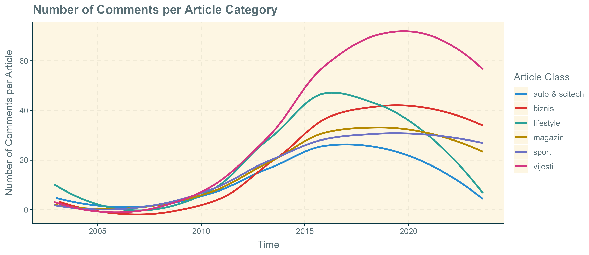

September 2024
More than ever before, people rely on the internet for their daily news and information. With the rapid proliferation of internet access across the globe, more and more people are turning away from traditional, analogue, news outlets in favor of social media such as Twitter and Facebook, or large online-only news platforms. Given that these web-based news portals have become the primary source of information for a majority of the population, they are naturally of great interest to social scientists, who wish to know more about the media landscape, and what societal priorities the media landscape reflects.
This project aims to make use of the easily accessible online news data by focusing on klix.ba, the most visited and most influential news portal in Bosnia. By scraping, systematizing, and analyzing all news articles on the website, I aim to map out what type of news Bosnians engage with, and how they engage with it, hopefully providing a unique insight into the broader media trends in the country. The reason for choosing Bosnia is that general efforts into collecting and archiving news articles have been largely absent to my knowledge, underscoring the importance of such work in the future.
The data is sourced directly from klix.ba via a python web scraper, written using BeautifulSoup. The analysis is based on this web scraped data, in addition to the initial data collection done by Seferovic8. Sentiment labels and scores were calculated using MoritzLaurer's multilingual zero-shot classification model. The data itself consists of 786.718 news articles stretching from December 2002 to August 2023.
All articles on klix.ba are categorized into one of 7 categories - a cursory glance at the total amount of news articles per category reveals that a majority of articles belong to the "Vijesti" category, namely the general news category. Surprisingly, the "Sport" category is the second largest category, and makes up more than 20% of all articles on klix.ba, indicating a substantial interest in sports news. Besides the "Magazin" category, which includes news reporting on cultural events and makes up some 12% of all articles, all other article categories take up a limited amount of space.

Breaking down article frequencies across time reveals a surprisingly stable distribution of categories throughout most of the time period. The news category makes up about 50% of all articles in basically every year 2005 until 2023. The plot below also reveals that klix.ba publishes approximately the same amount of articles each month, with the exception of the pre-2007 period. There also seems to be a slight indication of a general growth in the number of articles post-2020.

The dataset also includes information on how many comments and shares each article receives. This provides an interesting view into the public's engagement with news articles, indicating which articles generate more engagement than others. As the plot below illustrates, klix.ba articles generated a limited amount of engagement until 2013, with about 0-20 comments per article. After 2013, there is a substantial increase in the number of comments, reaching an all time high in 2019, with about 60 comments per article. With the exception of a noticeable drop around 2020, the number seems to have stabilized around 40 comments per article. This suggests that the notoriously combative klix.ba comment threads are perhaps not a thing of the past, but are less prevalent than before.

Breaking down the number of comments per article across article categories reveals that the general news category expectedly generates the highest amount of reader engagement. In fact, there seems to have been a deviation in the number of comments between the general news category, and all other categories around 2014. Until 2014, all article categories generated about the same amount of comments. After 2014 however, general news stands out as the most engaging news category by far.



Through this project, we seek to understand the media landscape in Bosnia and provide insights into how news is consumed and produced, offering a reflection of Bosnian society’s interests and media trends.